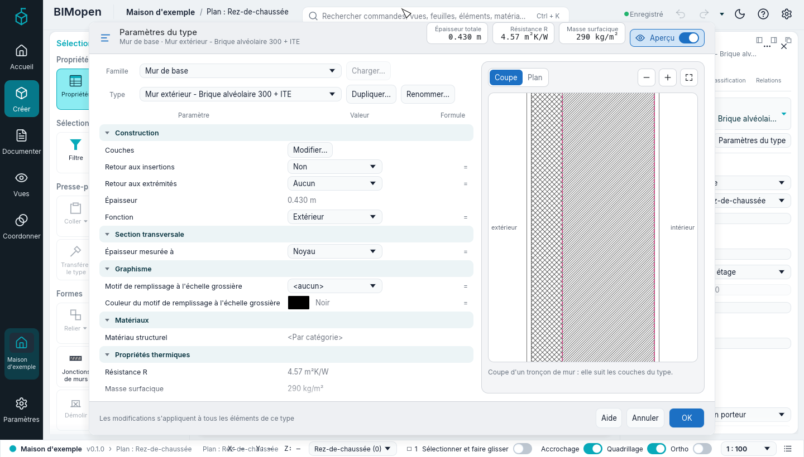
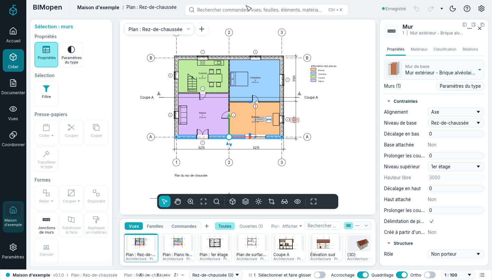
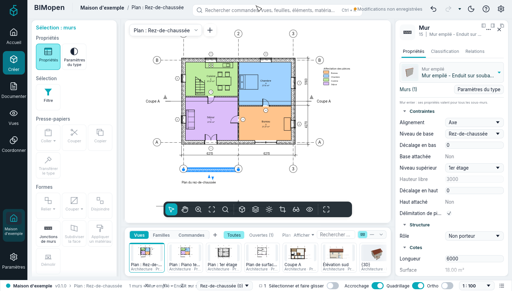
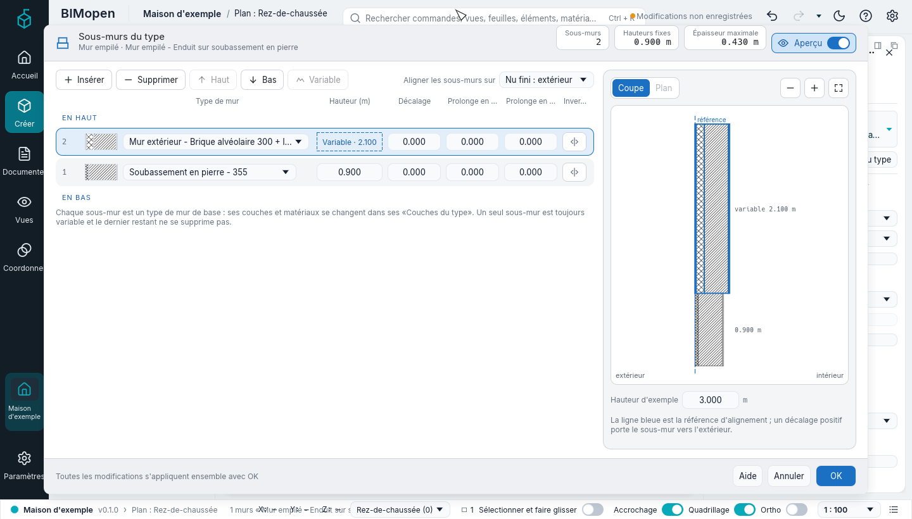

Murs, portes et fenêtres
Ce chapitre décrit comment on dessine les murs, comment ils se joignent et s'attachent aux toits et aux sols, comment on règle leurs types et leurs couches, et comment on y place des portes et des fenêtres, comment on les inverse, on les déplace et comment elles sont dessinées à chaque niveau de détail.
Dessiner des murs
Créer ▸ Construire ▸ Mur (ou WA) lance l'outil mur, dans un plan ou dans la vue 3D.
Choisissez le type de mur dans le sélecteur de type en haut du panneau de l'élément ;
Paramètres du type modifie le type, et avec lui chaque mur de ce type. La carte contextuelle
Dessiner : mur montre le groupe Dessiner, et le bandeau des options montre :
| Option | Ce qu'elle fait |
|---|---|
| Hauteur ou Profondeur | Le mur monte depuis le niveau (Hauteur) ou descend depuis lui (Profondeur) |
| Un niveau, ou Non lié avec une valeur | Le mur atteint ce niveau, ou est aussi haut (ou profond) que la valeur |
| Niveau | Dans une vue 3D seulement : le niveau sur lequel reposent les murs ; |
| Alignement | Le plan du mur qui suit les clics : Axe (par défaut), l'axe du noyau, ou l'une des faces de finition et du noyau, extérieure ou intérieure |
| Continuer | Activée, chaque clic termine un mur et commence le suivant ; désactivée, chaque paire de clics fait un mur à part |
| Décalage | L'Alignement passe à cette distance des clics, vers l'extérieur |
| Rayon | Indisponible : il demande des murs courbes, et apparaît désactivé |
| Jonction aux extrémités | Pas encore disponible, affichée grisée : les murs dessinés se joignent toujours ; la jonction d'une extrémité s'empêche ensuite depuis sa commande |
| Jonction automatique | Pas encore disponible, affichée grisée et cochée : les murs se joignent à ceux qu'ils rencontrent |
Dans la vue 3D, le mur en cours de dessin suit le curseur sous forme de solide, avec son épaisseur et sa hauteur jusqu'au niveau supérieur (ou la hauteur saisie), sur le plan du niveau, avec sa longueur et son angle en cote temporaire ; Maj le garde orthogonal et Échap le retire. Rectangle, les polygones et Choisir des lignes y fonctionnent aussi : les murs de toute la forme suivent le curseur, et la ligne du niveau sous le curseur se choisit comme en plan.
Pendant le dessin :
- l'extérieur du mur est à gauche du sens de dessin : dessiné de gauche à droite, la face extérieure est en haut. L'aperçu montre la face extérieure plus épaisse ;
- la barre d'espace met l'extérieur du mur suivant de l'autre côté ;
- après le premier point, tapez une longueur et appuyez sur Entrée : la valeur s'affiche dans un cadre près du curseur, et le mur s'arrête à cette distance, dans la direction du curseur (les quadrillages, les séparateurs de pièces et les contours de surface, les coupes et les élévations acceptent de même une longueur tapée) ;
- Échap termine la chaîne ; encore Échap, ou Modifier, ferme l'outil.
Le groupe Dessiner choisit la forme :
| Forme | Comment |
|---|---|
| Ligne | Cliquez le début et la fin de chaque mur |
| Rectangle | Cliquez deux coins opposés : quatre murs joints, l'extérieur à l'extérieur |
| Polygone inscrit | Réglez Côtés dans le bandeau des options, cliquez le centre et un sommet : les sommets sont sur le cercle |
| Polygone circonscrit | De même, mais les côtés touchent le cercle |
| Choisir des lignes | Cliquez une ligne du plan (une ligne ou une arête d'un élément) : un mur le long de celle-ci. Appuyez sur TAB sur une ligne pour prendre toute la chaîne des lignes qui lui sont jointes, puis cliquez |
L'alignement et l'inversion
Sélectionnez un mur : des points bleus marquent les extrémités de sa ligne d'alignement, et deux flèches se tiennent sur son côté extérieur. Un clic sur les flèches retourne le mur autour de sa ligne d'alignement : la première et la dernière couche s'échangent, les portes et les fenêtres gardent leur orientation. Changer l'Alignement d'un mur placé ne le déplace pas ; l'inversion suivante le tourne autour du nouveau plan. Changer le type d'un mur, ou ses couches, laisse sa ligne d'alignement où elle était.
Lier les murs aux toits et aux sols
Un mur peut suivre un toit ou un sol au lieu d'une hauteur fixe.
- Sélectionnez les murs.
- Sélection : murs ▸ Modifier le mur ▸ Lier haut/bas.
- Dans le bandeau des options, Attacher le mur : Haut ou Base.
- Cliquez le toit ou le sol, dans un plan, une coupe ou la vue 3D.
Avec Haut, les murs montent ou descendent jusqu'à la sous-face du toit (en suivant ses pentes : les murs pignons montent jusqu'au faîtage) ou du sol au-dessus. Avec Base, ils reposent sur la face supérieure du sol en dessous. Dès lors ils le suivent : un toit plus raide, un toit relevé par son décalage de base, un sol déplacé emportent les murs avec eux.
Pour les délier : sélectionnez les murs, Sélection : murs ▸ Modifier le mur ▸ Délier haut/bas, puis cliquez l'élément dont les détacher, ou appuyez sur Détacher tout dans le bandeau des options. Les murs gardent la hauteur qu'ils ont à ce moment, et peuvent être attachés de nouveau à tout moment. Quand un toit ou un sol auquel des murs sont attachés est supprimé, ces murs gardent aussi leur hauteur.
Les propriétés Haut attaché et Base attachée montrent l'état (lecture seule) ; tant que le haut est attaché, Hauteur libre est en lecture seule.
Modifier le contour d'un mur
Un mur n'est pas forcément un rectangle : son contour s'esquisse dans une élévation ou une coupe parallèle, avec des trous, comme pour un pignon ou un mur en gradins.
- Sélectionnez le mur et cliquez sur Mode ▸ Modifier le contour dans sa carte contextuelle. Depuis un plan ou une vue non parallèle au mur, Atteindre la vue liste les coupes et élévations parallèles : choisissez-en une et cliquez sur Ouvrir la vue.
- Le mode esquisse s'ouvre avec le contour du mur en magenta. Changez-le avec Ligne et Rectangle (voir le mode esquisse) : choisissez une ligne et appuyez sur Del, dessinez-en de nouvelles, ou un Cercle. Chaque contour fermé à l'intérieur est un trou à travers toutes les couches ; un contour dans un trou est de nouveau plein.
- Cliquez sur Terminer le mode d'édition (ou Annuler le mode d'édition pour laisser le mur tel qu'il était).
Le mur prend ce contour en 3D, dans les coupes et en plan, où il n'est coupé que là où le contour atteint le plan de coupe ; ses portes et fenêtres le coupent toujours, aussi sur un trou, qui reste un trou. Un haut attaché à un toit ou à un sol le limite toujours. Plan, coupes, élévations et vue 3D montrent un seul solide, tiré du même contour et des mêmes trous. Les couches qui se retournent habillent les trous comme les portes et les fenêtres (voir Types de murs et couches). Un mur-rideau garde les panneaux et les meneaux à l'intérieur de son nouveau contour. Mode ▸ Réinitialiser le contour le rend de nouveau rectangulaire ; Ctrl+Z annule l'un comme l'autre.
Le contour se modifie aussi dans la vue 3D : l'esquisse se trouve sur le plan du mur et la vue reste en 3D. Ce n'est que depuis un plan qu'Atteindre la vue apparaît, et rien ne change tant qu'une vue n'est pas ouverte avec Ouvrir la vue. Pendant l'esquisse, le contour d'origine du mur est tracé en lignes de référence pointillées ; l'esquisse s'accroche à leurs extrémités et sur elles.
Jonctions de murs
Les murs dont les extrémités se rencontrent se joignent d'eux-mêmes, de même qu'un mur qui se termine sur le flanc d'un autre et deux murs qui se croisent. Au Détail Moyen et Élevé, chaque couche est résolue contre les couches de l'autre mur :
- dans un angle (en L), chaque couche rencontre la même couche de l'autre mur : les finitions tournent l'angle et les noyaux se rejoignent ;
- dans un T, le noyau du mur qui se termine traverse les finitions de l'autre mur jusqu'à son noyau ; ses propres finitions s'arrêtent à la face, qui y reste ouverte ;
- là où deux murs se croisent (en X), un noyau traverse les finitions de l'autre mur ;
- les morceaux du même matériau fusionnent sans ligne entre eux ; une ligne fine sépare deux matériaux différents ; le contour libre est dessiné épais.
Au Détail Faible, les murs joints forment un seul remplissage, sans ligne entre eux. Les coupes et la vue 3D utilisent les mêmes morceaux : rien ne se superpose.
L'outil Jonctions de murs
Formes ▸ Jonctions de murs dans la carte contextuelle, puis cliquez le carré gris qui apparaît sur un angle. Le bandeau des options propose :
- Configuration : Bout à bout (un mur continue, l'autre s'arrête contre lui), Onglet (les deux se terminent sur la bissectrice) ou Équerre (le mur qui s'arrête se termine à l'équerre) ; Précédent et Suivant changent le mur qui continue ;
- Affichage : Nettoyer la jonction, Ne pas nettoyer la jonction (les murs se touchent avec une ligne épaisse entre eux) ou Utiliser le paramètre de la vue.
Chaque modification peut être annulée. Échap ferme l'outil.
La propriété du plan Affichage des jonctions de murs (dans Graphisme) est le paramètre de la vue : Nettoyer toutes les jonctions de murs, ou Nettoyer les murs de même type pour garder une ligne épaisse là où se rencontrent des murs de deux types, sauf si leur angle est réglé sur Nettoyer la jonction.
Interdire une jonction
Pour qu'une extrémité de mur ne se joigne pas (un joint de dilatation, par exemple), sélectionnez le mur, faites un clic droit sur le point bleu de cette extrémité et choisissez Interdire la jonction : les deux murs se terminent alors à l'équerre, séparés. Une petite marque à côté de l'extrémité l'indique ; cliquez-la, ou faites un clic droit sur le point et choisissez Autoriser la jonction, pour la joindre à nouveau.
Types de murs et couches
Paramètres du type (la vignette du panneau d'outils quand un mur est sélectionné, le bouton sous le sélecteur de type des Propriétés, ou le menu d'un type dans l'arborescence du projet) montre les paramètres d'un type de mur ; une modification vaut pour tous les murs de ce type.
Paramètres du type

En haut figurent la famille et le type et, pour un type à couches, les trois valeurs de Couches du type : Épaisseur totale, Résistance R et Masse surfacique. Dessous, Famille avec Charger… (une famille de la bibliothèque ; grisé pour les murs et les autres familles système, que l'on duplique au lieu de les charger) et Type avec les autres types de la famille, Dupliquer… (une copie, qui devient le type des murs sélectionnés ; son nom ne suit pas ses couches) et Renommer…. Suivent les paramètres dans un tableau Paramètre · Valeur · Formule, en groupes qu'un clic sur leur titre ouvre et ferme :
- Construction : Couches avec Modifier…, qui ouvre Couches du type ; Retour aux insertions (Non, Extérieur, Intérieur, Les deux) ; Retour aux extrémités (Aucun, Extérieur, Intérieur) ; Épaisseur (la somme des couches en mètres, en lecture seule) ; Fonction (Extérieur, Intérieur, Fondation, Soutènement, Vide technique, Noyau).
- Section transversale : Épaisseur mesurée à (Noyau, Face extérieure, Face intérieure).
- Graphisme : Motif de remplissage à l'échelle grossière et Couleur du motif de remplissage à l'échelle grossière (un échantillon qui ouvre le choix de la couleur), c'est-à-dire comment les murs coupés du type sont remplis avec le niveau de détail Faible.
- Matériaux : Matériau structurel, en lecture seule : le matériau de la couche marquée structurelle dans Couches du type, «
» s'il n'y en a pas. - Propriétés thermiques : Résistance R et Masse surfacique, en lecture seule et calculés à partir des couches (ils affichent «—» tant qu'il manque à un matériau ses valeurs thermiques) ; Absorption solaire (de 0 à 1, 0,7 au départ) et Rugosité (de 1 · Très lisse à 5 · Très rugueux).
- Identification : Note clé (saisie, ou … ouvre les Notes clés du projet : codes et descriptions à ajouter, modifier ou supprimer ; une ligne choisie et OK donnent son code au type), Code d'assemblage, Description de l'assemblage (lecture seule), Modèle, Fabricant, Commentaires du type, URL, Description, Marque de type (ce que montre une étiquette de mur), Résistance au feu et Coût.
La colonne Formule marque d'un «=» les valeurs modifiables. Chaque modification s'applique aussitôt et Ctrl+Z l'annule, une étape chacune ; Annuler annule toutes les modifications faites depuis l'ouverture de la boîte de dialogue, OK les garde, Aide ouvre cette page.
À droite, l'aperçu dessine le type comme Couches du type : Coupe (le mur coupé, ses couches côte à côte) ou Plan (l'extrémité du mur), avec les boutons pour réduire, agrandir et ajuster ; les sols et les toits montrent leurs couches superposées ; les portes, les fenêtres, les composants et les murs-rideaux une image de l'un d'eux. L'interrupteur Aperçu de l'en-tête, à côté des chiffres (un œil et un interrupteur marche/arrêt), le masque et le tableau s'élargit dans l'espace libéré, tandis que la boîte de dialogue garde sa taille et sa place ; rallumé, il affiche de nouveau l'aperçu, et le choix est conservé. Les sols, les toits et les autres familles utilisent la même boîte de dialogue, avec leurs propres paramètres.
Couches du type
Couches ▸ Modifier… ouvre Couches du type, la même boîte de dialogue pour les murs, les sols, les toits et les plafonds. En haut se trouvent la famille et le type, et trois valeurs mises à jour à chaque modification : Épaisseur totale (en mètres), Résistance R (m²K/W : la somme épaisseur / conductivité thermique des couches, plus 0,17 pour les deux surfaces) et Masse surfacique (kg/m² : la somme épaisseur × masse volumique). R et la masse s'affichent quand chaque matériau a sa Conductivité thermique et sa Masse volumique (les matériaux du gabarit les ont, les autres se complètent dans Matériaux) ; sinon elles affichent «—».
À gauche se trouve la liste des couches, du CÔTÉ EXTÉRIEUR en haut au CÔTÉ INTÉRIEUR en bas. Chaque couche est une carte avec son numéro, un échantillon de son matériau (couleur et motif de coupe), sa Fonction (Structure, Support, Isolant thermique, Lame d'air, Finition 1, Finition 2, Membrane), son Matériau (un clic ouvre Matériaux pour le choisir), son Épaisseur en millimètres et trois interrupteurs :
- Retour : la couche peut faire retour aux ouvertures et aux extrémités (jamais une couche du noyau d'un mur) ;
- Matériau structurel : le matériau de la couche est le matériau structurel du type (une seule, dans le noyau) ;
- Variable : l'épaisseur de la couche peut varier (une seule, dans les sols et les toits).
Deux lignes pointillées, Limite du noyau · dessus et Limite du noyau · dessous, délimitent le noyau. Un clic sur une carte la sélectionne ; Insérer ajoute une couche sous celle sélectionnée ; Supprimer, Haut et Bas agissent sur la couche sélectionnée et sont grisés sans sélection. Dans un mur, une limite du noyau se sélectionne aussi d'un clic et se déplace avec Haut et Bas. Une couche membrane n'a pas d'épaisseur, et toute autre couche a au moins 4 mm : les autres valeurs sont refusées, la boîte de dialogue reste ouverte et la ligne d'état en bas dit pourquoi.
Pour les murs, sur la ligne des boutons :
- Retour aux insertions (Non, Extérieur, Intérieur, Les deux) : les couches qui font retour hors du noyau de ce côté tournent dans les tableaux des portes et des fenêtres ; les couches derrière elles reculent ;
- aux extrémités (Aucun, Extérieur, Intérieur) : de même aux extrémités libres des murs.
À droite l'aperçu suit chaque modification. Coupe montre le mur coupé, ses couches côte à côte et aussi hautes que Hauteur d'exemple (6000 mm au départ), ou le sol, le toit ou le plafond avec ses couches superposées ; Plan (murs seulement) montre l'extrémité du mur avec les couches qui font retour autour. La couche sélectionnée est entourée et le noyau se trouve entre deux lignes pointillées. Les boutons au-dessus du dessin le réduisent, l'agrandissent et l'ajustent ; la molette, le pincement et le glissement le zooment et le déplacent aussi, et un clic sur une couche la sélectionne dans la liste. En dessous, pour les murs, Structure verticale (en coupe) rassemble Modifier, Fusionner les régions, Profils, Affecter des couches, Scinder la région et Rainures, pas encore disponibles (grisés).
L'aperçu dessine chaque couche exactement comme les plans et les coupes au niveau de détail Moyen : le motif de coupe du matériau dans sa couleur, sur le fond de la vue en Lignes ou sur la couleur d'ombrage du matériau dans les styles ombrés, selon le style graphique de la vue active et le thème. Un matériau modifié dans Matériaux modifie de même l'aperçu, les plans, les coupes et la vue 3D ; les remplacements d'une vue (Visibilité/Graphismes, filtres, remplacements d'un élément) ne modifient que cette vue, jamais l'aperçu.
L'interrupteur Aperçu de l'en-tête, à côté des chiffres, masque l'aperçu et la liste prend toute la largeur, tandis que la boîte de dialogue garde sa taille et sa place ; rallumé, il affiche de nouveau l'aperçu, et le choix est conservé. En bas, OK applique toutes les modifications en une seule étape, que Ctrl+Z annule ; Annuler ferme sans rien changer ; Aide ouvre cette page. Dans une fenêtre étroite, l'aperçu se place au-dessus de la liste.
Le retournement apparaît dans toutes les vues : en plan, dans la vue 3D, dans les coupes et les élévations, les couches cochées habillent les tableaux, le linteau et l'appui des portes et fenêtres, les côtés des trous d'un contour modifié (voir Modifier le contour d'un mur) et les extrémités libres. Un type de porte ou de fenêtre remplace le retournement du mur par sa Fermeture du mur.
Propriétés des murs

Quand un mur est sélectionné, les Propriétés montrent en haut le sélecteur de type : l'image du type, sa famille et son nom. Un clic ouvre la liste des types groupés par famille (Mur de base, Mur-rideau), chacun avec une petite image — les couches d'un mur côte à côte dans les couleurs de leurs matériaux, le quadrillage d'un mur-rideau — et le type courant en surbrillance ; le texte saisi dans Rechercher un type… garde les types dont le nom le contient, les flèches et Entrée en choisissent un. Dessous, Murs (1) indique ce qui est montré et Paramètres du type ouvre la boîte de dialogue décrite plus haut.
Les paramètres sont rangés en groupes qu'un clic sur leur titre ouvre et ferme :
- Contraintes : Alignement (Axe, Axe de l'âme, Nu fini : extérieur, Nu fini : intérieur, Face de l'âme : extérieure, Face de l'âme : intérieure), Niveau de base, Décalage en bas, Base attachée (lecture seule), Prolonger les couches en bas, Niveau supérieur (un niveau, ou Non lié), Hauteur libre (saisie seulement avec Non lié, grisée sinon ; à la ligne de commande elle est refusée, avec la raison, tant que le mur a un niveau supérieur), Décalage en haut (seulement avec un niveau, grisé sinon), Haut attaché (lecture seule), Prolonger les couches en haut, Délimitation de pièce (décochée, les pièces autour du mur l'ignorent) et Créé à partir d'un volume (lecture seule).
- Structure : Rôle (Non porteur, Porteur, Contreventement, Combiné). Un mur autre que Non porteur est structurel, et son Enrobage en tête, son Enrobage côté intérieur et son Enrobage côté extérieur se choisissent (25, 35 ou 40 mm) ; sinon ils sont grisés. Volume d'armatures est en lecture seule.
- Cotes : Longueur, Épaisseur, Surface, Volume et les extrémités de la ligne du mur.
- Identification : Commentaires, Marque et Classer comme (Mur extérieur, Mur intérieur, Cloison, Mur de fondation ; tant qu'aucun n'est choisi, selon la fonction du type).
- Phases : Phase de création (Existant, Nouvelle construction) et Phase de démolition (Aucune, Existant, Nouvelle construction). Elles restent avec le mur ; les vues ne dessinent pas encore les phases.
Prolonger les couches en bas et en haut portent les couches hors du noyau sous la base et au-dessus du haut de cette distance (une valeur négative les raccourcit), dans la vue 3D, dans les coupes et dans les élévations ; le noyau reste entre la base et le haut. En haut, elles se prolongent là où le haut est plat, pas là où le mur est attaché à un toit ou à un plan incliné.
Avec plusieurs murs sélectionnés, le filtre indique Murs (n), le sélecteur de type montre leur type (ou «‹valeurs différentes›») et chaque ligne la valeur commune aux murs, ou «‹valeurs différentes›» là où elles diffèrent ; une modification va à tous en une seule étape. Aide sur les propriétés en bas ouvre cette page ; Appliquer confirme la valeur en cours de saisie. Chaque modification est une étape que Ctrl+Z annule.
Placer des portes et des fenêtres
Créer ▸ Construire ▸ Porte (DR) ou Fenêtre (WN), dans un plan, une coupe, une élévation ou la vue 3D. Choisissez
le type, puis passez sur un mur : l'ouverture suit le curseur le long de celui-ci, et des cotes
temporaires mesurent depuis son axe jusqu'aux axes des murs les plus proches qui traversent l'hôte,
de chaque côté. Une porte s'ouvre du côté du mur où se trouve le curseur ; la barre d'espace
met sa charnière sur l'autre tableau. Cliquez pour la placer : le mur est coupé dans chaque vue.
Une fenêtre prend la Hauteur d'allège par défaut de son type.
Les portes et les fenêtres reçoivent une Marque qui compte par catégorie (1, 2, 3…), à partir de la plus haute.
Étiquettes
Étiqueter lors du placement, dans le bandeau des options des outils porte et fenêtre, étiquette chaque ouverture à mesure qu'elle est placée. Le bandeau des options propose alors Horizontale ou Verticale, et Ligne de repère avec sa longueur. L'étiquette d'une porte montre sa Marque ; celle d'une fenêtre la Marque de type de son type. Documenter ▸ Étiqueter tout étiquette les ouvertures qui ne le sont pas encore.
Inverser une porte ou une fenêtre
Sélectionnez une porte ou une fenêtre en plan : des flèches en travers du mur, du côté où elle s'ouvre, retournent son ouverture ; des flèches à côté, le long du mur, mettent sa charnière sur l'autre tableau. Le menu contextuel fait de même : Inverser le sens (la charnière) et Inverser l'orientation (l'ouverture).
Déplacer une porte ou une fenêtre dans un autre mur
Sélectionnez-la, Sélection : portes ▸ Hôte ▸ Choisir un nouvel hôte (ou Sélection : fenêtres), puis cliquez un autre mur : l'ouverture s'y déplace, à l'endroit cliqué, avec son type et son allège. Elle reste sélectionnée.
En faisant glisser une porte ou une fenêtre, elle reste dans un mur : le pointeur est projeté sur la ligne d'alignement du mur, l'ouverture glisse donc le long du mur, entre ses extrémités, avec les cotes temporaires vers les murs les plus proches, en plan, en coupe, en élévation ou dans la vue 3D ; là, un clic sur le vitrage d'une fenêtre sélectionne la fenêtre, pas ce que l'on voit au travers. Relâchée au-dessus d'un autre mur, elle passe dans ce mur ; relâchée dans le vide, elle reste au dernier endroit valide du sien. Les touches fléchées la déplacent le long du mur de la même façon.
Propriétés des portes et des fenêtres
Occurrence : Niveau, Hauteur d'allège, Largeur et Hauteur (du type), Hauteur de linteau, Commentaires, Marque. Changer Hauteur d'allège ou Hauteur de linteau déplace l'ouverture vers le haut ou vers le bas ; sa taille reste.
Type : Fermeture du mur (Par hôte, ou un retournement propre), Fonction (Intérieur ou Extérieur), Matériau de la porte (Matériau du vitrage pour les fenêtres) et Matériau du cadre, Largeur de l'habillage, Épaisseur (du vantail d'une porte, ou la profondeur du cadre d'une fenêtre), Hauteur d'allège par défaut et Retrait de fenêtre (fenêtres : à quelle distance de la face extérieure se trouve le cadre), Projection extérieure de l'habillage et Projection intérieure de l'habillage (portes), Vantaux et Marque de type. Une porte ne peut pas devenir une fenêtre en changeant de type.
Comment sont dessinés murs, portes et fenêtres
Le Détail du plan décide :
| Faible | Moyen | Élevé | |
|---|---|---|---|
| Murs | Un remplissage (ou le motif grossier du type), murs joints fusionnés | Chaque couche avec le motif de coupe de son matériau | Comme Moyen |
| Fenêtres | Le cadre en un seul contour, le vitrage le long, le mur en dessous vu en lignes | Le cadre coupé à chaque tableau et au meneau d'une fenêtre à deux vantaux, à son retrait ; une ligne de vitrage ; l'appui extérieur et la tablette intérieure | Comme Moyen, avec double vitrage |
| Portes | Le vantail en ligne et son arc d'ouverture | Le cadre à chaque tableau, le vantail avec son épaisseur, son arc d'ouverture | Comme Moyen, avec les habillages en saillie des faces |
Dans tous les cas, les couches s'arrêtent aux tableaux de l'ouverture, fermées par la ligne de coupe, ou s'y retournent comme le demandent les types. En coupe et en 3D, portes et fenêtres montrent cadre, vantaux, vitrage et appuis, dans les matériaux du type.
Murs-rideaux
Un mur-rideau est un mur d'un type de mur-rideau, dessiné avec l'outil Mur : choisissez Mur-rideau (un seul panneau de verre sur la longueur du mur), Vitrage extérieur (quadrillage défini par le type) ou Devanture (quadrillage et meneaux) dans le sélecteur de type, puis dessinez comme tout mur, en plan ou en 3D, avec Continuer et les formes de Dessiner. Un mur de base devient mur-rideau en choisissant un type de mur-rideau dans le sélecteur de type ; les portes et fenêtres qu'il accueille sont supprimées, car un mur-rideau ne les accueille pas, et un message l'indique (annuler les ramène).
En plan, chaque panneau de verre est dessiné avec son épaisseur et les meneaux sont coupés. Un type avec Incorporer automatiquement coché (la Devanture) dessiné le long d'un mur y découpe son ouverture, en plan, en coupe, en 3D et en IFC. Le mur reste un seul mur : à côté et au-dessus de l'ouverture il continue avec ses couches, sa surface nette ne compte pas l'ouverture, et déplacer ou redimensionner le mur-rideau déplace l'ouverture avec lui.
- Disposition verticale et disposition horizontale du type (Distance fixe, Nombre fixe, Espacement maximal) avec leur espacement, ainsi que Nombre de quadrillages verticaux et Justification verticale de l'occurrence, placent seuls les lignes de quadrillage.
- Créer ▸ Construire ▸ Quadrillage de mur-rideau : cliquez près du bord haut ou bas pour une ligne verticale, près d'un côté pour une horizontale, dans une élévation, une coupe, un plan ou la vue 3D (sur la face sous le curseur) ; elle s'accroche au milieu et aux tiers du panneau.
- Créer ▸ Construire ▸ Meneau : Ligne de quadrillage, Segment de ligne de quadrillage ou Toutes les lignes de quadrillage, avec le type de meneau choisi dans le sélecteur de type ; cliquez la ligne de quadrillage dans une élévation, une coupe ou la vue 3D.
- Sélectionnez le mur-rideau, puis Panneau dans sa carte contextuelle : choisissez un type de panneau (une Porte de mur-rideau, un panneau vitré ou plein, ou aucun) et cliquez le panneau à changer, dans une élévation, une coupe ou la vue 3D.
Panneaux et meneaux ont leurs nomenclatures, et l'export IFC écrit le mur-rideau avec ses plaques et ses éléments.
- Quadrillage de mur-rideau ▸ Placement : Tous les segments (toute la ligne), Un segment (seulement à travers le panneau cliqué) ou Tout sauf la sélection (cliquez pour placer la ligne, cliquez sur les segments à exclure, puis cliquez hors de la ligne).
- Un mur-rideau sélectionné, Ajouter/Supprimer des segments : un clic sur un segment d'une ligne de quadrillage le retire (les deux panneaux de part et d'autre n'en font qu'un et son meneau disparaît) ou le remet. Les panneaux restent rectangulaires : un segment qui donnerait un panneau en L est refusé.
- Le curseur sur un mur-rideau, TAB met en évidence le panneau sous le curseur ; un clic ne sélectionne que lui. Le panneau de l'élément en montre la Largeur et la Hauteur, et le sélecteur de type en change le type.
Murs empilés

Un mur empilé est fait de sous-murs l'un au-dessus de l'autre : par exemple un mur enduit sur un soubassement en pierre. Chaque sous-mur est un type de mur de base, avec ses couches et ses matériaux. Le gabarit en a un, Mur empilé - Enduit sur soubassement en pierre (le mur extérieur sur un soubassement en pierre de 0,9 m) : choisissez-le dans le sélecteur de type de Mur et dessinez-le comme tout mur.
Le mur empilé porte la ligne, les niveaux et la hauteur ; ses sous-murs les suivent. En plan, en coupe, en élévation et dans la vue 3D, chaque sous-mur est dessiné avec les couches de son type, dans les couleurs de leurs matériaux. Les sous-murs se joignent aux murs qu'ils rencontrent, chacun à sa hauteur : à l'angle de deux murs empilés, le socle rejoint le socle et le mur du dessus le mur du dessus, un mur de base rejoint tour à tour chaque sous-mur, et deux piles de hauteurs ou d'épaisseurs différentes se rejoignent sur chaque hauteur commune ; chaque couche se ferme autour de l'angle, en plan et en 3D. La Nomenclature des murs liste les sous-murs, une ligne chacun. Une porte ou une fenêtre placée dans un mur empilé coupe chaque sous-mur qu'elle traverse, son allège mesurée depuis la base du mur empilé.
Un clic sélectionne le mur entier ; Tab passe à chaque sous-mur, de bas en haut (la barre d'état indique «Tab · élément suivant»). Les Propriétés du mur entier valent pour tous ses sous-murs ; son Alignement est le plan sur lequel il est dessiné, comme pour tout mur : les faces de la bande qu'occupent ses sous-murs, ou le noyau du sous-mur variable. Un mur de base qui prend un type empilé, ou un mur empilé qui prend un type de base, reste sur son alignement. D'un sous-mur, seuls Délimitation de pièce et Rôle se modifient : le reste vient du mur empilé et de son type, et son type se change dans le type empilé. Décomposer en murs simples, dans le menu contextuel et avec le mur sélectionné, fait de chaque sous-mur un mur de base indépendant à sa place ; ils ne se recomposent pas (Ctrl+Z annule). Le contour d'un mur empilé ou d'un sous-mur ne se modifie pas encore.
Les sous-murs du type

Les Paramètres du type d'un type de mur empilé montrent Sous-murs avec Modifier…, qui ouvre Sous-murs du type. En haut, le type et trois valeurs : le nombre de sous-murs, la somme des hauteurs fixes et l'épaisseur maximale. Le tableau liste les sous-murs de EN HAUT à EN BAS, numérotés depuis le bas : Type de mur (un type de mur de base), Hauteur en mètres, Décalage par rapport à la ligne de référence (positif vers l'extérieur), Prolonge en haut et Prolonge en bas (jusqu'où les couches hors de l'âme dépassent le sous-mur ; négatif, elles s'arrêtent avant) et Inverser. Un seul sous-mur est Variable : sa hauteur est ce qui reste de la hauteur du mur.
Insérer ajoute un sous-mur sous celui sélectionné, Supprimer l'enlève (jamais le dernier ; en supprimant le variable, celui du dessus devient variable), Haut et Bas le déplacent, Variable en fait le variable. Un Prolonge en bas positif accroche le haut du sous-mur du dessous («Accroché») : ses couches s'arrêtent là où commencent celles du dessus. Aligner les sous-murs sur choisit le plan de chaque sous-mur qui se trouve sur la ligne de référence, parmi ceux de l'Alignement (Axe, Nu fini : extérieur…).
À droite, la coupe du type, haute comme la Hauteur d'exemple, la ligne de référence en bleu, l'extérieur à gauche ; un clic sur un sous-mur sélectionne sa ligne. La mince bande Aperçu la masque et l'affiche, et la boîte de dialogue garde sa taille et sa place. OK applique les modifications en une seule étape (Ctrl+Z annule) ; Annuler laisse le type tel qu'il était.
Niveaux
Créer ▸ Références ▸ Niveau dessine un niveau dans une coupe ou une élévation en deux clics, à la hauteur du premier ; pendant le dessin, une cote temporaire donne la distance au niveau le plus proche. Le bandeau des options montre :
- Créer une vue en plan : activé, le nouveau niveau reçoit son plan ; désactivé, c'est un niveau de référence sans plan, que les murs et les autres éléments peuvent quand même prendre comme base ou sommet ;
- Types de vues en plan... : les types de plan que reçoit le niveau (Plan d'étage ; les plans de plafond ne sont pas encore disponibles) ;
- Décaler : à quelle distance au-dessus des clics se place le niveau.
Plans de construction
Chaque vue dessine et place sur un plan de construction. Celui d'un plan d'étage est son niveau, celui d'une vue 3D le niveau le plus bas ; une coupe ou une élévation n'en a pas tant qu'on n'en définit pas un. Le plan reste avec la vue.
Définir le plan de construction
Créer ▸ Plan de construction ▸ Définir ouvre la fenêtre Plan de construction. Plan de construction courant montre le plan que la vue utilise. Sous Spécifier un nouveau plan de construction :
- Nom : choisir dans la liste un niveau, une grille ou un plan de référence nommé (le choisir sélectionne Nom), puis OK ;
- Choisir un plan : après OK, cliquer sur un mur (en plan sa face du côté du curseur, en coupe ou en 3D celle tournée vers l'observateur), une grille, un plan de référence ou, en coupe, un niveau ;
- Choisir une ligne et utiliser le plan de construction où elle a été esquissée : après OK, cliquer sur un mur ou un séparateur de pièces : son niveau devient le plan de construction.
Un plan qui ne se trouve pas dans la vue, comme une grille choisie en plan ou un niveau en coupe, n'y est pas défini : Atteindre la vue liste les vues où il se trouve (les coupes et élévations tournées vers un plan vertical, les plans d'étage d'un plan horizontal) et les vues 3D, et Ouvrir la vue ouvre celle choisie avec ce plan de construction. Annuler rétablit le plan précédent.
Afficher le plan de construction
Créer ▸ Plan de construction ▸ Afficher dessine la grille du plan de construction sur le modèle quand le plan se trouve dans la vue (en 3D toujours) ; Afficher à nouveau la masque. Dans une coupe sans plan de construction, il ouvre d'abord la fenêtre Plan de construction. Un clic sur le bord de la grille la sélectionne : le bandeau des options montre Espacement, la distance entre ses lignes (1 m au départ). Tant que la grille est affichée, les points des murs et des autres lignes dessinés en plan s'accrochent aux croisements de ses lignes.
Dans une vue 3D, un clic là où aucun élément n'est sous le curseur tombe sur le plan de construction de la vue quand il en a été défini un : un composant placé à l'est de la maison avec le plan de construction sur l'étage se pose sur l'étage.
Plans de référence
Créer ▸ Plan de construction ▸ Plan de référence (ou taper RP) dessine un plan de
référence en deux clics, comme une grille. Dessiné en plan, c'est le plan vertical passant par la
ligne, montré comme une ligne verte en tirets dans chaque plan d'étage et dans les coupes et
élévations qui le croisent. Dessiné dans une coupe ou une élévation, c'est le plan passant par la
ligne à travers la profondeur de la vue (une ligne horizontale donne un plan horizontal), montré
dans les vues tournées dans le même sens. Sélectionné, on lui donne un Nom dans le
panneau de l'élément : un plan de référence nommé est listé dans la fenêtre Plan de construction et
son nom est écrit au début de sa ligne. Les plans de référence s'accrochent, se déplacent, se
copient, pivotent, se symétrisent et se suppriment comme les grilles.
En ligne de commande
Les mêmes opérations, tapées :
attach attach the selected walls to the roof over them
attach 412 attach their top to element 412 (a roof or a floor)
attach base 398 attach their base to the floor 398
detach all detach them from everything
walljoin 0,0 {"kind":"Giunto d'angolo","cleanup":"Non calcolare unioni"}
walljoin 57 1 disallow wall 57 does not join at its end
rehost 120 12,4 move door or window 120 into the wall at 12,4
door {"point":[3,0],"tag":{"vertical":true,"leader":true,"length":1}}
refplane 3,-2 3,11 Entrance axis a reference plane in the open plan, named
workplane Entrance axis the open view's work plane, by name
showworkplane on 0.5 show the work plane's grid, 0.5 m apart
Pas encore disponible
Murs courbes (arc, Cercle, Rayon), choix de surfaces, murs porteurs, murs empilés, profilés et cavités de murs, couches composées verticalement (régions), jonction de géométrie, phases, et lucarnes dans les toits.